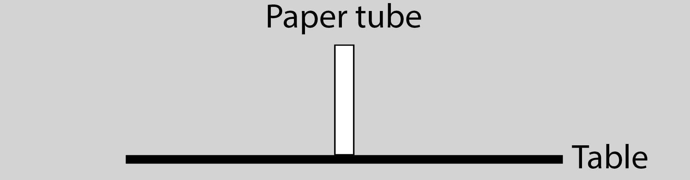
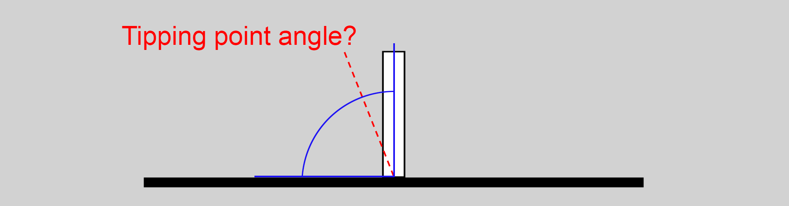
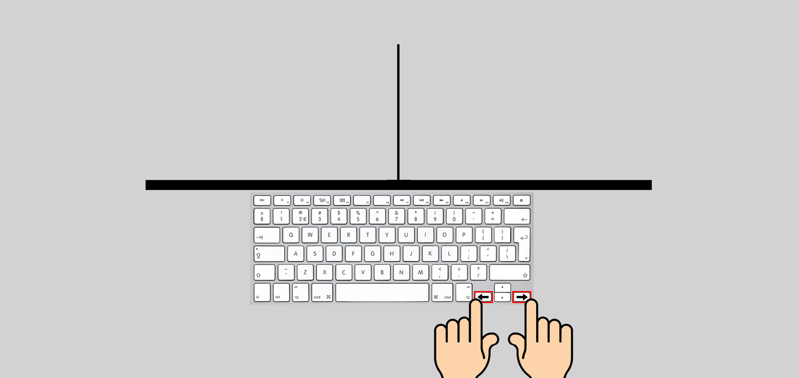
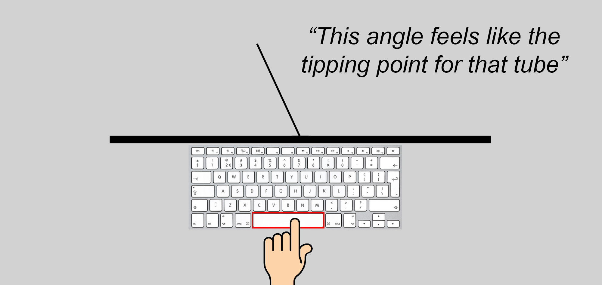
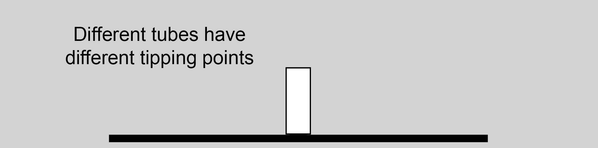
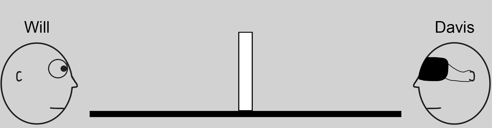
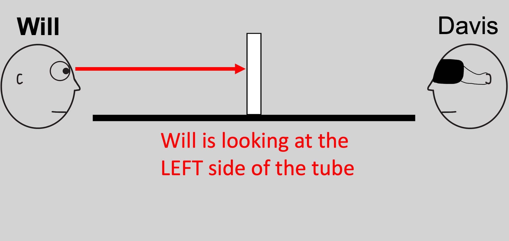
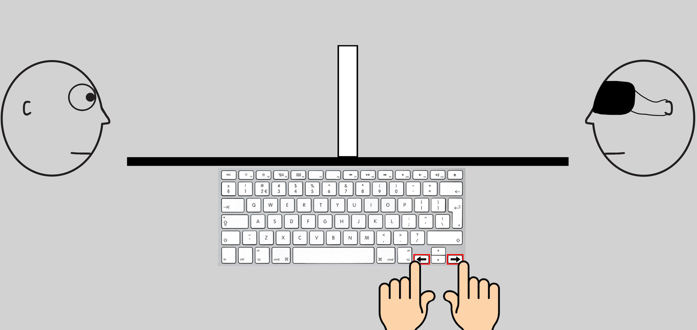

<!DOCTYPE html>
<html>
    <head>
        <title>Online Tube Tilt 2</title>
        <meta charset="UTF-8">
    </head>


    <script src="jspsych/jspsych.js"></script>
    <script src="jspsych/plugins/jspsych-html-keyboard-response.js"></script>
    <script src="jspsych/plugins/jspsych-fullscreen.js"></script>
    <script src="jspsych/plugins/jspsych-survey-multi-choice.js"></script>
    <script src="jspsych/plugins/jspsych-survey-multi-select.js"></script>
    <script src="jspsych/plugins/jspsych-survey-text.js"></script>
    <script src="jspsych/plugins/jspsych-survey-html-form.js"></script>
    <script src="jspsych/plugins/jspsych-instructions.js"></script>

    <script src="source/ExperimentSurveys.js"></script>
    <script src="source/gatherParticipantInfo.js"></script>
    <script src="source/Plugin_DavisTubeTilt.js"></script>
    <script src="source/davis-resize.js"></script>

    <link rel="stylesheet" href="jspsych/css/jspsych.css"></link>

<!-- Global site tag (gtag.js) - Google Analytics -->
<script async src="https://www.googletagmanager.com/gtag/js?id=UA-165817481-1"></script>
<script>
    window.dataLayer = window.dataLayer || [];
    function gtag(){dataLayer.push(arguments);}
    gtag('js', new Date());

    gtag('config', 'UA-165817481-1');
</script>

<body></body>
<script>


    /**************************/
    /**************************/
    /**** SETUP VARIABLES *****/
    /**************************/
    /**************************/
    // Trial Parameters
    const nBaseConditions = 16; // entered
    const nRepetitions = 2; // 16 trial (base) x ~6s per trial = 96 s (1.6 mins) x 2 repetitions =  || 3.2 (mins) ||
    const inter_trial_interval = 1000 // in ms, 1 second 
    const nPracticeTrials = 2; // number of practice trials (draws randomly)
    const stepSize = 2; // Step Size in degrees
    const nBreaks = 4;  // number of breaks for the main trials
    const nTrials = nBaseConditions * nRepetitions; // number of main trials
    const trialsPerBreak = Math.floor(nTrials / nBreaks);
    const delayAfterWrongCheckAnswer = 3000; // in ms, 3 seconds
    var mainTrial_index = 0; // keeps track of the main trial number
    var screenWidth_Inches, screenHeight_Inches, screenDiagonal_Inches;

    // Focus Elements
    var fullscr_ON = 0; // var that tracks fullscreen activity
    var monitor_browser_interactions = false;


    const timelineVariables = [
        {humanize: "images/Humanize/CO_SF.jpg", viewing: "images/Viewing/CO_LEFT_SF.jpg", moving: "images/Moving/Closed_Open.jpg"},
        {humanize: "images/Humanize/CO_ST.jpg", viewing: "images/Viewing/CO_LEFT_ST.jpg", moving: "images/Moving/Closed_Open.jpg"},
        {humanize: "images/Humanize/CO_TF.jpg", viewing: "images/Viewing/CO_LEFT_TF.jpg", moving: "images/Moving/Closed_Open.jpg"},
        {humanize: "images/Humanize/CO_TT.jpg", viewing: "images/Viewing/CO_LEFT_TT.jpg", moving: "images/Moving/Closed_Open.jpg"},

        {humanize: "images/Humanize/CO_SF.jpg", viewing: "images/Viewing/CO_RIGHT_SF.jpg", moving: "images/Moving/Closed_Open.jpg"},
        {humanize: "images/Humanize/CO_ST.jpg", viewing: "images/Viewing/CO_RIGHT_ST.jpg", moving: "images/Moving/Closed_Open.jpg"},
        {humanize: "images/Humanize/CO_TF.jpg", viewing: "images/Viewing/CO_RIGHT_TF.jpg", moving: "images/Moving/Closed_Open.jpg"},
        {humanize: "images/Humanize/CO_TT.jpg", viewing: "images/Viewing/CO_RIGHT_TT.jpg", moving: "images/Moving/Closed_Open.jpg"},

        {humanize: "images/Humanize/OC_SF.jpg", viewing: "images/Viewing/OC_LEFT_SF.jpg", moving: "images/Moving/Open_Closed.jpg"},
        {humanize: "images/Humanize/OC_ST.jpg", viewing: "images/Viewing/OC_LEFT_ST.jpg", moving: "images/Moving/Open_Closed.jpg"},
        {humanize: "images/Humanize/OC_TF.jpg", viewing: "images/Viewing/OC_LEFT_TF.jpg", moving: "images/Moving/Open_Closed.jpg"},
        {humanize: "images/Humanize/OC_TT.jpg", viewing: "images/Viewing/OC_LEFT_TT.jpg", moving: "images/Moving/Open_Closed.jpg"},

        {humanize: "images/Humanize/OC_SF.jpg", viewing: "images/Viewing/OC_RIGHT_SF.jpg", moving: "images/Moving/Open_Closed.jpg"},
        {humanize: "images/Humanize/OC_ST.jpg", viewing: "images/Viewing/OC_RIGHT_ST.jpg", moving: "images/Moving/Open_Closed.jpg"},
        {humanize: "images/Humanize/OC_TF.jpg", viewing: "images/Viewing/OC_RIGHT_TF.jpg", moving: "images/Moving/Open_Closed.jpg"},
        {humanize: "images/Humanize/OC_TT.jpg", viewing: "images/Viewing/OC_RIGHT_TT.jpg", moving: "images/Moving/Open_Closed.jpg"},
    ];

    var imageFiles = [

        // images for Viewing Phase
        "images/Viewing/CO_LEFT_SF.jpg", "images/Viewing/CO_LEFT_ST.jpg", "images/Viewing/CO_LEFT_TF.jpg", "images/Viewing/CO_LEFT_TT.jpg", 
        "images/Viewing/OC_LEFT_SF.jpg", "images/Viewing/OC_LEFT_ST.jpg", "images/Viewing/OC_LEFT_TF.jpg", "images/Viewing/OC_LEFT_TT.jpg",

        "images/Viewing/CO_RIGHT_SF.jpg", "images/Viewing/CO_RIGHT_ST.jpg", "images/Viewing/CO_RIGHT_TF.jpg", "images/Viewing/CO_RIGHT_TT.jpg",
        "images/Viewing/OC_RIGHT_SF.jpg", "images/Viewing/OC_RIGHT_ST.jpg", "images/Viewing/OC_RIGHT_TF.jpg", "images/Viewing/OC_RIGHT_TT.jpg", 

        // Images for moving phase
        "images/Moving/Closed_Open.jpg", "images/Moving/Open_Closed.jpg",

        // images for humanize phase
        "images/Humanize/CO_SF.jpg", "images/Humanize/CO_ST.jpg", "images/Humanize/CO_TF.jpg", "images/Humanize/CO_TT.jpg",
        "images/Humanize/OC_SF.jpg", "images/Humanize/OC_ST.jpg", "images/Humanize/OC_TF.jpg", "images/Humanize/OC_TT.jpg",

        // Images for instructions
        "images/Instructions/intro1.png", "images/Instructions/intro2.png", "images/Instructions/intro3.png", "images/Instructions/intro4.png",
        "images/Instructions/intro5.png", "images/Instructions/intro6.png", "images/Instructions/intro7.png", "images/Instructions/intro8.png",
        "images/Instructions/intro9.png"
    ];


    /**************************/
    /**************************/
    /***** Go  Fullscreen *****/
    /**************************/
    /**************************/
    var go_fullscreen = {
        type: 'fullscreen',
        fullscreen_mode: true,
        message: '<div style="max-width:600px;text-align: center"><p>This experiment runs in fullscreen. If you leave fullscreen mode or switch to another browser window, the experiment will terminate automatically (and you won\'t be able to get paid). So please hang in there for the next 5 mins!</p></div>',
        button_label: 'Go fullscreen',
        on_finish: function(){
            fullscr_ON = 1;
            monitor_browser_interactions = true;
        }
    };


    /**************************/
    /**************************/
    /*** Get Size of Screen ***/
    /**************************/
    /**************************/
    // units are inches, but only dependent on the ratio. If another unit is desired, change the units below (in mm: w = 85.6 mm, h = 53.98 mm)
    var creditCard_width = 3 + 3/8; // inches
    var creditCard_height = 2 + 1/8; // inches

    var ScreenDims = {
        type: 'davis-resize',   // this resize plugin has been edited. DO NOT USE WITH A STANDARD PLUGIN.
        item_width: creditCard_width, 
        item_height: creditCard_height, 
        starting_size: 400,
        prompt: "<p>Click and drag the lower right corner of the box until the box is the same size as a credit card held up to the screen.</p>",
        on_finish: function(data){
            nonMainResponseBin.estimatedScreenDiagonal = data.screenDiagonal_Inches
        }
    };


    /**************************/
    /**************************/
    /****** Instructions ******/
    /**************************/
    /**************************/
    var instructions_string = [
        `<div style="max-width:600px";><p>Welcome!<p></p>Please read the step-by-step instructions carefully. You can use the arrow keys, or the buttons below, to navigate.</p></div>`,

        `<div style="max-width:600px";><p>On each trial, you will see a screen similar to the screen below. The white rectangle represents a standard sheet of paper that's been rolled into a tube, taped closed, and set upright on a flat table.</p><p></p></div>`,

        `<div style="max-width:600px";><p>Your task is to find the <b>tipping point</b> for the paper tube. The tipping point is the theoretical <i>angle where tipping the tube any further and letting go would cause the tube to fall on its side</i>.</p><p><br>If you are among the top 50% participants in terms of finding the correct tipping point angles, you will receive a <b>50% bonus</b> pay.</p></div>`,

        `<div style="max-width:600px";><p>On each trial, a green arrow will point to the left or the right, indicating the direction in which you should tilt the tube.</p><p></p></div>`,

        `<div style="max-width:600px";><p>Once you press a button, the tube will disappear from the table and it is your job to adjust the line that appears to the angle you believe was the tube's tipping point. Use the <b>arrow keys</b> to adjust the angle of the line to the left and right.</p><p></p></div>`,

        `<div style="max-width:600px";><p>When you feel that you have found the correct tipping point of the tube, press <b>space</b> to submit your response.</p><p></p></div>`,

        `<div style="max-width:600px";><p>The size and shape of the tube will differ from trial to trial. Keep in mind that different tubes have different tipping points.</p><p></p></div>`,

        `<div style="max-width:600px";><p>Additionally, on each trial, the identical twins Will and Davis are also going to be on the screen, facing the tube. One of them will be staring at the tube, while the other one is blindfolded (and doesn't see anything). You will be asked questions about Will and Davis throughout the experiment. </p><p></p></div>`,

        `<div style="max-width:600px";><p>On each trial, you will also be asked to identify which side of the tube Will is able to see. Think about what Will would be able to see given his placement to the tube. <u>Remember that Will is always the sighted face.</u></p><p></p></div>`,

        `<div style="max-width:600px";><p>You're now ready for a couple of practice trials!<p>Press the "next" to continue.</p><p></p></div>`
    ];

    var instructions = {
        type: 'instructions',
        // kinda complicated, but easy way to number sections of the instructions. If you want to edit the instructions, edit the instructions_string above
        pages: [...Array(instructions_string.length).keys()].map(x => `<font size='+1'> <b> <u> Instructions (please read carefully) (` + (x + 1) + ` / ` + (instructions_string.length) + `) </b></u></font>` + instructions_string[x]),
        show_clickable_nav: true,
    }

    var checkInstructions_array = [
        "The tipping point is the theoretical angle where tipping a tube any further and letting go would cause the tube to fall on its side",

        "If you tilt a tube, but not beyond its tipping point, and let go of it, it will fall back to its upright position",

        "If you tilt a tube beyond its tipping point and let go of it, it will fall on its side", 

        "The shape and size of a paper tube determines its tipping point angle"
    ]

    var checkInstructions_wasCorrect = new Array(checkInstructions_array.length).fill(false)

    var checkInstructions = {
        type: 'survey-multi-select',
        questions: [
            {
                prompt: "Please indicate the statements that are true (multiple selections allowed):", 
                options: checkInstructions_array, 
                horizontal: false,
                required: true,
                name: 'CheckInstructionsAreUnderstood'
            },
        ],
        randomize_question_order: false,
        on_finish: function(){

            nAnswers = JSON.parse(jsPsych.data.get().last(1).values()[0].responses)["CheckInstructionsAreUnderstood"].length


            if (nAnswers < checkInstructions_array.length) {
                jsPsych.pauseExperiment();

                // get display element
                display_element = jsPsych.getDisplayElement();

                // change display element
                display_element.innerHTML = "You didn't answer with all the correct answers."

                jsPsych.pluginAPI.setTimeout(jsPsych.resumeExperiment, delayAfterWrongCheckAnswer) // 1 second
            }

        }
    };

    var checkInstructions_Loop = {
        timeline: [checkInstructions],
        loop_function: function(){
            // get last response
            lastAns = JSON.parse(jsPsych.data.get().last(1).values()[0].responses)["CheckInstructionsAreUnderstood"]

            // return and continue if all answers selected
            if (lastAns.length == checkInstructions_array.length) {
                nonMainResponseBin.CheckInstructionsAreUnderstood = true;
                return(false) // do not repeat
            }

            for (ans of lastAns) { // for each answer selected
                ans_indx = checkInstructions_array.indexOf(ans); // find array index of answer from choices

                if (!checkInstructions_wasCorrect[ans_indx]) { // if the answer was not already selected
                    // mark answers with green text
                    checkInstructions_array[ans_indx] = "<syle style='color:darkgreen'>" + checkInstructions_array[ans_indx] + "</style>";

                    // and update correct answer array
                    checkInstructions_wasCorrect[ans_indx] = true;
                }
            }
            return(true) // repeat checkInstructions
        }
    }


    /**************************/
    /**************************/
    /**** Practice  Trials ****/
    /**************************/
    /**************************/

    var TubeTilt_PracticeTrials = {
        type:'Davis-Tube-Tilt',
        img_Humanize: function() {
            return(jsPsych.timelineVariable('humanize', true))
        },
        img_Viewing: function() {
            return(jsPsych.timelineVariable('viewing', true))
        },
        img_Moving: function(){
            return(jsPsych.timelineVariable('moving', true))
        },
        verbose: false,
        step_size: stepSize,
        isPractice: true,
        allow_held_key: true,
    }

    var practiceStartScreen = {
        type: 'html-keyboard-response',
        stimulus: [`<div style="max-width:600px";><font size='+1'><p><b>Well done! All 4 statements were true.</b></p><u><p>Practice Trials</u></font></p><p>Remember: Your task is to find the tipping point angle of the paper tube using the <b>left</b> and <b>right</b> arrow keys, and you press the <b>space</b> to finalize your answer.</p><p>Press "c" to continue to the trials.</p></div>`],
        response_ends_trial: true,
        choices: ['c'],
    }

    var practiceTrialBlock = {
        timeline: [TubeTilt_PracticeTrials],
        randomize_order: true,
        repetitions: 1,
        background_color: "#D3D3D3",
        post_trial_gap: inter_trial_interval,
        sample: {
            type: 'without-replacement',
            size: nPracticeTrials,
        },
        timeline_variables: timelineVariables,
    }


    /**************************/
    /**************************/
    /****** Main  Trials ******/
    /**************************/
    /**************************/

    var TubeTilt_MainTrials = {
        type:'Davis-Tube-Tilt',
        img_Humanize: function() {
            return(jsPsych.timelineVariable('humanize', true))
        },
        img_Viewing: function() {
            return(jsPsych.timelineVariable('viewing', true))
        },
        img_Moving: function(){
            return(jsPsych.timelineVariable('moving', true))
        },
        step_size: stepSize,
        allow_held_key: true,
        isPractice: false,
        verbose: false,
        on_finish: function(data){ // this is to establish breaks in the experiment
            mainTrial_index ++;


            if ((mainTrial_index % trialsPerBreak == 0) & (mainTrial_index != nTrials) ) { // when remainder is 0, break (every multiple of trialsPerBreak) also not on the last trial

                // pause experiment
                jsPsych.pauseExperiment();
                tStartBreak = performance.now();

                // get display element
                display_element = jsPsych.getDisplayElement();

                // setup key listener
                var key_listener = jsPsych.pluginAPI.getKeyboardResponse({
                    callback_function: endBreak,
                    valid_responses: ["c"],
                    rt_method: 'performance',
                    persist: false
                });

                html = '<p> Break! </p>'
                html += '<p> You have completed ' + mainTrial_index + ' out of ' + nTrials + ' trials.</p>'
                html += "<p>Take a short break, relax, and rest your eyes for a bit. When you are ready to continue the experiment, press C.</p>" 
                display_element.innerHTML = html; 

                function endBreak(){
                    data.BreakLength = performance.now() - tStartBreak;
                    jsPsych.resumeExperiment();
                }
            };
        }
    }

    var mainStartScreen = {
        type: 'html-keyboard-response',
        stimulus: [`<div style="max-width:600px";><font size='+1'><b><u><p>Main Experiment</u></b></font></p><p>Good job! You're now ready to start the experiment. Press "c" to begin.</p><p>Again: Your task is to find the tipping point angle of the paper tube using the left and right arrow keys, and you press the space to finalize your answer.</p><p>If you are end up among the top 50% participants in terms of estimating the correct tipping point angles, you will receive a <b>50% bonus</b>.</p></div>`],
        response_ends_trial: true,
        choices: ['c'],
    }

    var mainTrialBlock = {
        timeline: [TubeTilt_MainTrials],
        repetitions: nRepetitions,
        post_trial_gap: inter_trial_interval,
        randomize_order: true,
        isPractice: false,
        anchor_point: null,
        background_color: "#D3D3D3",
        sample: {
            type: 'without-replacement',
            size: 16 // 16 is all the trials
        },
        timeline_variables: timelineVariables,
    }


    /**************************/
    /**************************/
    /***** End Experiment *****/
    /**************************/
    /**************************/

    function saveData(name, data){

        var xhr = new XMLHttpRequest();
        xhr.open('POST', 'write_data.php'); // 'write_data.php' is the path to the php file described above.
        xhr.setRequestHeader('Content-Type', 'application/json');
        xhr.send(JSON.stringify({filename: name, filedata: data}));
    }

    function toCSV(data) {
        keys = Object.keys(data)
        csv = keys.join(',') + '\n'        

        for (i = 0; i < data.FaceType.length; i++) { // for each trial
            for (j = 0; j < keys.length; j++) { // for each key
                csv += data[keys[j]][i]
                if (j < keys.length - 1){ // if not the final column (add a comma)
                    csv += ','
                } else {csv += '\n'} // if the last key (in list), add a newline
            }
        }
        return(csv)
    }
    var DataSave = {
        type: 'html-keyboard-response',
        stimulus: '<p><div style="max-width:600px;">You have completed the experiment. Continue to the next page by pressing "c" to get the link directing you to the Prolific link for your reward.</p></div>',
        choices: ['c'],
        on_load: function() {
            //   Save Data format
            // - Raw output will be saved in data/raw//
            // - All the pInfo, screen size, and questionaire responses saved in data/pInfo/
            // - responses from tube tilts will be saved in data/respMat/
            // - all the experiment settings will be in data/settings

            /**************************/
            /**************************/
            /**** Participant Info ****/
            /**************************/
            /**************************/
            var pInfo = gatherParticipantInfo();
            pInfo.screenHeight_Inches = screenHeight_Inches;
            pInfo.screenWidth_Inches = screenWidth_Inches;
            pInfo.screenDiagonal_Inches = screenDiagonal_Inches;
            pInfo.startTime = jsPsych.startTime();
            pInfo.totalTime = jsPsych.totalTime();
            pInfo_JSON = JSON.stringify({...pInfo, ...nonMainResponseBin}); // combine attributes
            saveData(['data/pInfo/pInfo_', pInfo.jsonFilename].join(""), pInfo_JSON)

            /**************************/
            /**************************/
            /** Experiment  Settings **/
            /**************************/
            /**************************/
            var settings = jsPsych.initSettings();
            // check the experiment structure
            saveData(['data/settings/settings_', pInfo.jsonFilename].join(""), JSON.stringify(settings))


            /**************************/
            /**************************/
            /******** Raw Data ********/
            /**************************/
            /**************************/
            saveData(['data/raw/raw_', pInfo.csvFilename].join(""), jsPsych.data.get().csv());


            /**************************/ 
            /**************************/
            /**** Response  Matrix ****/
            /**************************/
            /**************************/
            var trial_data = jsPsych.data.get().filter({trial_type: 'Davis-Tube-Tilt'});
            var respMat = {
                FinalLinePosition: trial_data.select('FinalLinePosition').values,
                FaceType: trial_data.select('FaceType').values,
                TiltDirection: trial_data.select('TiltDirection').values,
                TubeType: trial_data.select('TubeType').values,
                timeViewing: trial_data.select('timeViewing').values,
                timeMoving: trial_data.select('timeMoving').values,
                ViewingImage: trial_data.select('ViewingImage').values,
                MovingImage: trial_data.select('MovingImage').values,
                isPractice: trial_data.select('isPractice').values,
            };
            saveData(['data/respMats/respMat_', pInfo.csvFilename].join(""), toCSV(respMat))
        },
    };

    var go_off_fullscreen = {
        type: 'fullscreen',
        fullscreen_mode: false,
        on_load: function(){
            monitor_browser_interactions = false; // Stop monitoring fs
            return monitor_browser_interactions;
        },
    }

    var end_experiment = {
        type: 'html-keyboard-response',
        stimulus: '<p><div style="max-width:600px;">You have completed the experiment. Well done!</p><p></p><p>Click <a href="https://app.prolific.co/submissions/complete?cc=850D831F">here</a> to redirect to Prolific (and get paid!)</p></div>',
        choices: jsPsych.NO_KEYS,
    }

    /**************************/
    /**************************/
    /*** Initilize jsPsych ****/
    /**************************/
    /**************************/

    jsPsych.init({
        timeline: [
            pre_exp_survey_block, // Pre Experiment Survey Block
            go_fullscreen,  // Go Fullscreen
            ScreenDims, // Get the Screen Dims with comparison to credit card
            instructions, // Show instructions
            checkInstructions_Loop, // Make sure instructions are understood
            practiceStartScreen, // Start the practice trials
            practiceTrialBlock, // Do the practice Trials
            mainStartScreen, // Start the main trials
            mainTrialBlock, // Do the main trials
            post_exp_survey_block, // Post Experiment Survey Block
            DataSave, // Save the data
            go_off_fullscreen, // Go off fullscreen
            end_experiment // end the experiment with prolific link
        ],
        show_preload_progress_bar: true,
        use_webaudio: false,
        preload_images: imageFiles,
        bgColor: "#D3D3D3",
        on_interaction_data_update: function(data) {
            interaction = data.event;
            if(monitor_browser_interactions){
                if (interaction == "fullscreenexit" || interaction == "blur"){
                    fullscr_ON = 0;
                    fullscreenExitError = `<div style="max-width:600px;">Fullscreen mode disabled! Study aborted. Sorry about that! If you'd like to restart the experiment, reload entire page.</div>`

                    jsPsych.endExperiment(fullscreenExitError);
                }
            }
        },
    });


</script>
</html>